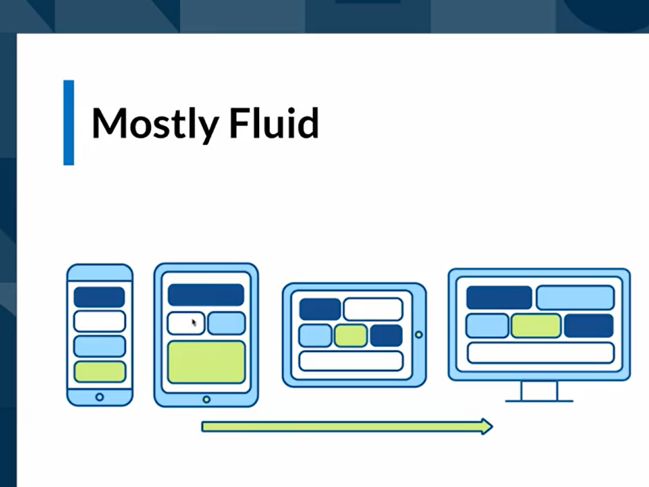
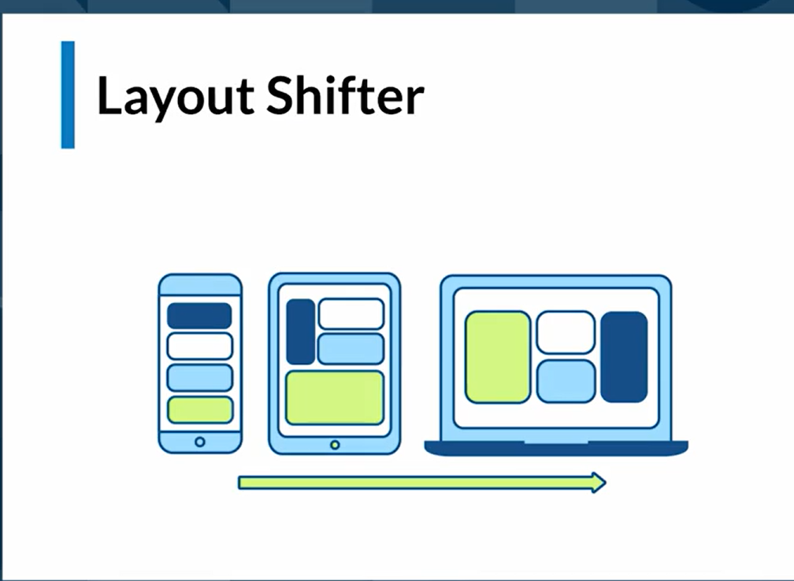

Metologia de trabajo para media queries Mobile First significa que se debe iniciar por el disenio del celular
Patrones de maquetacion responsive desing (Mobil First)
Mostly fluid

Cuando estamos en un smartphone todo forma una única columna, y en varias filas quedan colocados los
distintos bloques.
Según vaya creciendo la pantalla, los distintos bloques se agrupan ocupando toda la pantalla disponible.
En pantallas más grandes, el diseño es el mismo pero queda agrupado dentro de un contenedor que queda
centrado en la página con un tamaño fijo de ancho.
Ejemplo MostlyFluy
Layout Shifter

Este es uno de los patrones más complejos. Consiste en mover los bloques de contenido cambiando
totalmente el Layout, de ahí el nombre del patrón.
Esto se logra con contenedores padres que envuelven los contenedores hijos ( los contenedores con datos)
Ejemplo MostlyFluy